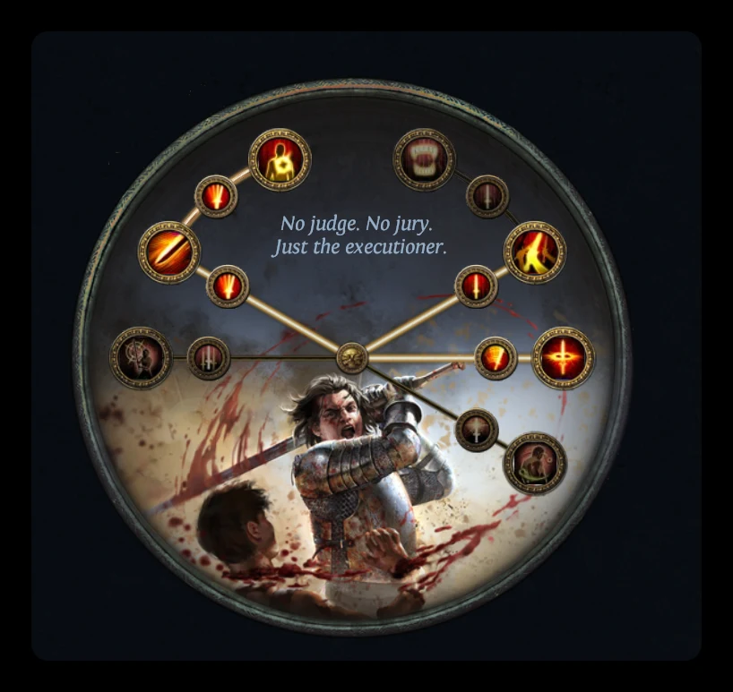

О билде
Вихрь (Cyclone) с поддержкой Ударная волна (Shockwave) на Рубаке (Slayer), в народе шоквейв циклон. Один из лучших стартеров для новичков. У циклона на актах очень много урона, за счёт чего акты проходятся очень быстро, а бюджетный сетап примерно за 30 хаосов уже закрывает Пожирателя миров и Пламенного экзарха. Дальше билд спокойно доезжает до Мейвен и всех пинакл боссов.
Стартовая версия билда работает за счёт уникального посоха Уступчивая бренность (The Yielding Mortality): на старте лиги он стоит около 1 хаоса, а даёт около 600 физического дпс. Дешевле аналога для старта не найти.
Плюсы и минусы
| Плюсы | Минусы |
|---|---|
| Очень простой, подходит новичкам | Высокий манакост: на первых порах билд зависит от похищения маны, и долго крутиться без мобов нельзя, пока не взяли снижение стоимости |
| Быстрые акты | Во время Вихря сильно падает скорость бега, пока нет уникальных ботинок Бегство (The Stampede) |
| Стартовый сетап около 30 хаосов закрывает Пожирателя миров и Пламенного экзарха | С Бегством не работают флаконы и вещи на скорость бега |
| Закрывает Мейвен и пинакл боссов с 1-2 порталов | Чем дальше, тем дороже каждый следующий прирост урона |
| Ударная волна зачищает экран одним ударом | Уберы только с очень большими вложениями или хорошими руками |
| Посох можно крафтить самому и продавать лишние |
Связки камней, вещи и флаконы на каждый этап лежат на вкладках , и . Этап переключается кнопками сверху: Лвлинг, Выход на карты, Пинакл, Эндгейм.
Как работает билд
Вихрь (Cyclone) это поддерживаемое умение: персонаж крутится и наносит удары вокруг себя. Ударная волна (Shockwave) добавляет взрыв вокруг цели при ударе, именно он чистит всю пачку. Распыление (Pulverise) увеличивает область.
Клич полководца (General's Cry) призывает воинов, которые повторяют удар связанным с ним умением. Это немного урона и очень много зачистки.
Урон от амулета Сердце бойни (Carnage Heart) работает, пока идёт похищение жизни. После 4 лабы Жестокое рвение (Brutal Fervour) не убирает похищение, когда хп полное, поэтому бонус работает всегда.
В эндгейм версии урон растёт за счёт тройного урона: пояс Великан (The Magnate) при 400 силы и мастерство в дереве, плюс самоцвет на двойной урон. Ещё добираем около 100% увеличения урона в ветке огня: для этого нужен плоский урон от огня к атакам (например, докрафт на кольце), и в связке Вихря не должно быть Жестокости (Brutality), потому что она запрещает стихийный урон.
Защитные механики
- Похищение жизни. Главная защита билда: огромное похищение, и пока вы атакуете, умереть очень сложно. Если удар не ваншотит, здоровье тут же восстанавливается. Похищение дают амулет Сердце бойни (Carnage Heart) и ноды в дереве, скорость восстановления ускоряют Жестокое рвение (Brutal Fervour) и мастерство в дереве, которое делает часть похищения мгновенной.
- Манакост. На первых порах билд зависит от похищения маны: мана восполняется только от ударов через ноду Дух войны (Spirit of War), поэтому долго крутиться без мобов нельзя. Если повезёт найти кольцо на снижение стоимости маны поддерживаемых умений (Channelling Skills have -4 to Total Mana Cost), играть становится сильно приятнее. В эндгейме манакост решает нагрудник со снижением стоимости атак в гнёздах.
- Скорость бега. Пока нет Бегства, ботинки на 30% скорости бега и ртутный флакон.
- Броня и блок. Вторая часть защиты: броня, блок атак и блок чар. С рарным посохом можно выйти примерно в 65% блока атак и 47% блока чар, а намазка Загадочная защита (Enigmatic Defence) на амулете добавляет блок обоих видов. Блок даёт очень много выживаемости.
- Несокрушимость (Unwavering Stance): вас невозможно оглушить.
- Пантеон: иммунитет к заморозке и к горящей земле.
Лвлинг
Связки камней на каждый момент: .
Класс
Сначала создаём Охотницу и берём Импульс (Momentum): он нужен Наскоку (Leap Slam), чтобы быстрее передвигаться по актам. Дальше создаём Дуэлянта, из него потом делается Рубака.
Акт 1
Играем на Раскалывающей стали (Splitting Steel) с поддержками Шанс кровотечения (Chance to Bleed) и Увечье (Maim). Для новичка это самый простой старт.
Акт 2: Раскол
После Мервейл переходим на Раскол (Sunder) с Беспощадностью (Ruthless) и Физическим уроном ближнего боя (Melee Physical Damage). Когда появится 4 гнездо, добавляем Ускорение атак (Faster Attacks). Передвигаемся на Наскоке с Ускорением атак и Импульсом. Ауры: Вестник пепла (Herald of Ash) и Вестник чистоты (Herald of Purity).
Бандиты: помогаем Алире.
Акт 3
Вестника чистоты меняем на Спасение от стихий (Purity of Elements), чтобы закрыть резисты. Если с резистами и так всё хорошо, вместо неё берём Решимость (Determination). Вестник пепла оставляем.
Акт 6: переход на Вихрь
После квеста Лилли Рот открывается камень Распыление (Pulverise), и переходим на Вихрь. Для перехода нужен хороший посох: можно нагемблить у торговца. Урон после перехода почти не проседает.
В 4 линке Вихрь, Физический урон ближнего боя, Распыление и Ударная волна. С 5 линком добавляем Усиленное поддержание (Infused Channelling). Если у вас не посох, а другое двуручное оружие (топор, меч), вместо Ударной волны ставим Жестокость (Brutality).
Передвижение то же. Ауры: Гордость (Pride), Камень и плоть (Flesh and Stone), Кровь и песок (Blood and Sand). Вестник пепла выкидываем, он больше не нужен.
Как играть на Вихре
Главное правило на актах и в начале карт: не зажимать Вихрь, а влетать в пачку и делать один удар. Ударная волна чистит экран, а зажатый Вихрь сильно замедляет персонажа. Это нужно только до покупки ботинок Копия Бегства (Replica Stampede) или Бегство (The Stampede): они фиксируют скорость бега, и дальше можно просто крутиться.
Боссы актов после перехода складываются один за другим.
Бандиты
Помогаем Алире: она даёт +15% ко всем сопротивлениям стихиям, а резисты в билде закрывать непросто.
Пантеон
- Душа Морского царя (Soul of the Brine King): улучшаем до иммунитета к заморозке.
- Душа Абберата (Soul of Abberath): улучшаем до иммунитета к горящей земле.
Лабиринты

| Лаба | Восхождение | Что даёт |
|---|---|---|
| 1 | Гроза легенд (Bane of Legends) | Больше урона, если недавно убивали, и больше урона по уникальным врагам |
| 2 | Воздействие (Impact) | Область действия, дальность удара и меткость |
| 3 | Палач (Headsman) | Добивание врагов с 20% хп и меньше |
| 4 | Жестокое рвение (Brutal Fervour) | Похищение жизни не снимается на полном хп |
Выход на карты
Сетап примерно за 30 хаосов: посох Уступчивая бренность, Сердце бойни (Carnage Heart), 5-6 линк в нагруднике, шлем на броню, ботинки на 30% скорости бега и перчатки на физический урон, скорость атаки и резисты.
Самое главное, что стоит купить, это посох и 5 линк. Остальные вещи могут быть любыми рарками, которые закрывают резисты. Этого уже достаточно, чтобы спокойно выходить на карты и фармить белые, жёлтые и даже лоутирные красные карты, где потихоньку выфармливаются все остальные вещи.
Посох на 600 физического дпс на старте это огромный буст урона, его хватает с головой. Поэтому остальными вещами в первую очередь вкладываемся в выживаемость.
Мидгейм версия
Это уже крепкая версия билда: она с лёгкостью проходит любые т16 карты, спокойно фармит валюту и сама себя обеспечивает. Играется при этом очень чилово и расслабленно. На этом сетапе закрываются Мейвен, Элдер, Шейпер и Убер Элдер.
- Добавляем Клич полководца (General's Cry) с Расколом и Автоусилением (Autoexertion): воины повторяют Раскол, это много зачистки. В связку Вихря Жестокость (Brutality).
- Ботинки Копия Бегства (Replica Stampede): фиксируют скорость бега на 150% от базовой, и Вихрь её больше не замедляет. Дальше можно просто зажимать Вихрь и крутиться. Берём именно копию, потому что она стоит в десятки раз дешевле обычного Бегства, а скорость бега даёт такую же.
- Нагрудник на базе брони, с бронёй и хп. Перераспределяем поинты под блок.
- Амулет Сердце бойни получше, с катализаторами и намазкой на блок.
- Кольцо на снижение стоимости поддерживаемых умений.
- Флаконы на автомате: алмазный, гранитный, серебряный.
Совет по Мейвен: в стадии с мозгом лучше крутиться в уголке, а не стакать лужи в центре.
Эндгейм версия
Эта версия обойдётся примерно в 100 диванов, и это будут ощутимые вложения в билд. Он становится в разы сильнее: может закрывать Симулякры, Внушающих страх (The Feared), фармить довольно сложные карты.
- Крафтовый посох на 950+ физического дпс (раздел «Крафт вещей»).
- Вихрь буйства (Cyclone of Tumult).
- 7 линк: Свирепость (Rage). Добавляется в камень Вихря ядром души, а ядра падают только с Атзири в храме Альвы, поэтому это дорогой грейд. Свирепость на любом уровне даёт 3 свирепости за удар, а при скорости атаки Вихря свирепость почти всегда полная.
- Волна пустоты (Void Shockwave) вместо обычной Ударной волны: прямая прибавка урона по боссам, но зачистка становится хуже. Если не лень, свапаем камни (на карты обычная Ударная волна, на боссов Волна пустоты), если лень, просто оставляем Волну пустоты.
- Великан (The Magnate) и 400 силы для тройного урона. Если пояс дешёвый, его можно взять и раньше: при большой скорости атаки тройной урон срабатывает очень часто.
- Бегство (The Stampede).
- Смертельная гордость (Lethal Pride): самоцвет на двойной урон.
- Около 100% увеличения урона в ветке огня (нужен плоский урон от огня к атакам, без Жестокости в связке Вихря).
- Флаконы до 100% шанса крита.
- Кап блока атак и чар, много брони.
- Шлем на резист хаоса и броню.
Все вещи эндгейм версии по слотам: , флаконы: .
Крафт вещей
Почти всё эндгейм снаряжение выгоднее крафтить самому: готовые вещи на трейде стоят в разы дороже себестоимости крафта, а лишние скрафченные вещи хорошо продаются.
Почти все эти крафты показаны в видео: Лучшая бюджетная стратегия фарма | Крафт вещей на Вихрь (cyclone / циклон 3.28 mirage).
Посох
Посох это главный источник урона: разница между посохом на 600 и на 800 физического дпс почти в 2 раза. На крафте посохов ещё и можно хорошо заработать, лишние продаются.
- База. Очень важна, смотрим именно на название базы. Подходят три: Посох эзомита (Ezomyte Staff), Посох вихрей (Maelström Staff), Посох судьи (Judgement Staff). Берём базу с фракчуред (закреплённым) свойством: скорость атаки или процент физического урона.
- Сущности. Кидаем Оглушающую сущность презрения (Deafening Essence of Contempt): она всегда даёт плоский физический урон, а мы ловим рядом гибридную физу (процент физического урона и меткость), хотя бы т5. Если префиксы засорились, снимаем лишнее Сферой отмены (Orb of Annulment).
- Процент физы докидываем на станке, если остался свободный префикс.
- Божественной сферой (Divine Orb) подгоняем цифры.
- Линкуем.
Свою базу с фракчуред процентом физы можно сделать Раскалывающей сферой (Fracturing Orb): в среднем удача примерно на 4 попытку.
Ориентиры по цифрам: даже первый простой крафт примерно за 2 дивана даёт посох на 800 физического дпс. А хороший ориентир для эндгейма, на который стоит смотреть, это посох на 950+ физического дпс.
Перчатки
- Покупаем базу с фракчуред резистом, которого вам не хватает. Это обязательно.
- Кидаем Оглушающую сущность усердия (Deafening Essence of Zeal): на перчатках она всегда даёт 17-18% скорости атаки. Крутим, пока рядом не поймаем второй резист или хаос резист.
- Префиксы доделываем Мистической сферой хаоса (Eldritch Chaos Orb). В префиксах ловим либо как можно больше брони, либо хп плюс броню.
Такие перчатки обходятся в копейки, а готовые на трейде стоят от 10 диванов.
Что в них нужно: скорость атаки, броня, хп, резисты, имплиситы Пожирателя миров и Пламенного экзарха (шанс прокола, скорость атаки).
Кольца
Кольцо на урон: так же, как с перчатками, можно взять базу с фракчуред резистом, если какого-то резиста не хватает. В неё кидаем Оглушающую сущность насмешки (Deafening Essence of Scorn): на кольце она всегда даёт 21-25% к глобальному множителю крита. Рядом ловим статы, ещё один резист или, если повезёт, хп. Если крафт дешёвый, достаточно поймать сущностью хотя бы одно полезное свойство: хп или резист.
Кольцо с Беззащитностью: проклятие Беззащитностью (Vulnerability) при попадании, хаос резист и хп. Сначала делаем базу: Раскалывающей сферой закрепляем на кольце свойство с проклятием Беззащитностью. Потом хаос резист проще всего поймать через Плодоремесленную установку.
Плоский урон от огня к атакам докрафчиваем на станке в одно из колец: он нужен для 100% увеличения урона в ветке огня. На кольце с Беззащитностью это свойство подчёркнуто.
Итог
Вихрь с Ударной волной на Рубаке это простой и очень сильный стартер, который отлично подходит новичкам. На нём не нужно знать сложных механик: билд держится на одном дешёвом унике, урона на актах и в начале карт с запасом, а похищение жизни прощает многие ошибки.
Что билд показал на практике:
- Акты проходятся быстро, примерно за 5 часов, боссы актов складываются один за другим.
- Сетап примерно за 30 хаосов закрывает Пожирателя миров и Пламенного экзарха.
- Грейды до пинакл версии с лёгкостью проходят любые т16 карты, билд сам себя обеспечивает валютой.
- Закрыты Мейвен, Элдер, стражи и Шейпер, Убер Элдер, Сирус: все пинакл боссы с 1-2 порталов.
- Закрыты Симулякр на 15 волн и т17 карты.
- 94-96 уровень апаются почти без смертей.
Где у билда предел: в уберы он выходит только с очень большими вложениями или хорошими руками. Первые примерно 20 диванов урон растёт кратно после каждого грейда (разница между посохом на 600 и на 800 дпс почти в 2 раза), а дальше каждое удвоение урона стоит очень дорого. Зато почти всё снаряжение можно скрафтить самому, и на крафте ещё и заработать.
Кому подходит: новичкам и тем, кто хочет спокойный, надёжный старт лиги и комфортный фарм обычного эндгейма без лишних вложений.
| Этап | Что делаем |
|---|---|
| Акты | Раскалывающая сталь, со 2 акта Раскол, с 6 акта Вихрь |
| Выход на карты | Уступчивая бренность, Сердце бойни, 5 линк, остальное на резисты |
| Пинакл | Клич полководца, Копия Бегства, броня и блок |
| Эндгейм | Крафтовый посох, Вихрь буйства, Великан, Бегство, Смертельная гордость |